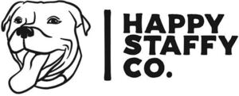

Trade Mark Journal No.2025/037 12 September 2025
WO0000001871912 (5,18,20,24,25,28,31,35)
Office of origin: Australia
Date of International Registration:21 July 2025
Date of designation in the UK:
21 July 2025

International priority date claimed: 13 May 2025
(Australia)
(2547486)
- Class 5
- Dietary pet supplements in the form of pet treats; dietary supplements for pets; nutritional supplements for pets; dietary supplements for animals; vitamin and mineral supplements for pets; nutritional supplements for animals; food supplements for animals; vitamin supplements for animals; dietary supplements for pets in the form of treats; nutritional supplements for dogs; vitamins for pets; vitamins for animals and pets.
- Class 18
- Pet clothing; clothes for pets; apparel for animals; pet apparel; clothes for animals; apparel for pets; clothing for animals; garments for pets; clothing for dogs; clothing for pets; animal apparel; raincoats for dogs; coats for animals; dog clothing; dog apparel; pet harnesses; leather leashes; pet leashes; harnesses for pets; harness for pets; leashes for pets; leashes for animals; animal leashes; leads for dogs; dog waste bag dispensers adapted for use with leashes; dispensers for dog waste bags adapted for use with leashes; coats for dogs; dog coats; dog collars; pet collars; collars for animals; collars, leashes and clothing for pets; collars, leashes and clothing for animals; collars for dogs; harness for dogs; harnesses for dogs; collars, harnesses and leashes for animals; collars, harnesses and leads for animals; dog leashes; leashes for dogs; collars for pets; dog collars and leads.
- Class 20
- Dog beds; animal beds; beds; beds for animals; inflatable beds for animals; portable dog kennels; doghouses; beds for pets; beds for household pets; pet beds; portable beds for pets; inflatable beds for pets; portable beds for animals; inflatable pet beds; elevated beds for household pets; pet beds and baskets; beds and baskets for pets; elevated beds for pets; covers specially adapted for elevated beds for household pets; sleeping cooling mats for pets; sofas for pets; pet cushions; cushions for lining pet crates; pet furniture.
- Class 24
- Pet blankets; fitted bed sheets for pets; fitted sheets for pet beds.
- Class 25
- Clothing; articles of clothing for human beings; cotton clothing; linen clothing; tops [clothing].
- Class 28
- Dog toys; toys for dogs; toys for pets; toys for pet animals; pet toys; toys, games and playthings for pets; toys, games and playthings for pet animals; chew toys for puppies, not edible; plush animals; plush characters and animals; smart toys; pet games; stuffed toys; toy figurines; pet playthings; chew toys for dogs, not edible; games for pets; games and toys; playthings for pets.
- Class 31
- Digestible teeth cleaning treats for dogs; dog biscuits; dogs; beverages for dogs; dog food; pet treats in the nature of bully sticks; edible pet treats; dog treats, edible; edible dog treats; edible organic pet treats for dogs; pet treats, edible; animal food; food for animals; pet food.
- Class 35
- Online retail services relating to collars for animals; retail services for online products via the web; online retail services for goods via the web; retail store services; retail services featuring a wide variety of consumer goods.
Happy Staffy Pty Ltd
Representative: Springbird IP Limited, 86-90 Paul Street London EC2A 4NE UNITED KINGDOM